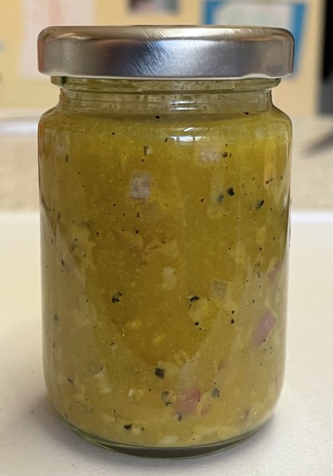

Dressings
Types
- Vinaigrettes
- Mayonnaise based
- Dairy based
Notes
- Ratio: 3 oil to 1 vinegar
- Olive oil goes bitter if whisked, better to shake ingredients together
- Can replace some vinegar with soy sauce or water
- Rice vinegar can substitute for sherry vinegar
- Vinegar dressing keeps for 6 months, citrus dressings for 6 weeks
- For mustard: Dijon > English > wholegrain
- Oil makes leaves wilt and vinegar runs off leaves if no surfactant / emulsifier
- Emulsifiers: mustard, honey, egg yolk
Serving
- Shake dressing well before using
- Only dress when ready to eat so salad does not wilt
Vinaigrettes
Red wine vinaigrette
- Makes 85ml
- Shake in bottle
- 3 tbsp olive oil
- 2 tsp red wine vinegar
- 1 tsp water
- 1 tsp Dijon mustard
- 1 small shallot finely minced
- ½ clove garlic grated
- ¼ tsp pepper
- ¼ tsp salt

Balsamic dressing
- Shake in bottle
- 3 tbsp olive oil
- 1 tbsp balsamic vinegar
- 1 tsp Dijon mustard
- ½ clove garlic grated
- ½ tsp maple syrup / honey
- ¼ tsp salt
Lime dressing
- Shake in bottle
- 2½ tbsp olive oil
- 1 tbsp lime juice
- 1 clove garlic crushed
- salt
Dairy based
Tahini dressing
- Dressing for meals with cumin / turmeric
- 100g natural yoghurt
- 2 tbsp smooth tahini
- juice of 1 lemon
- salt